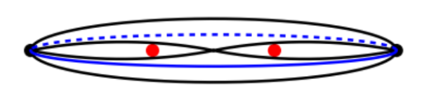
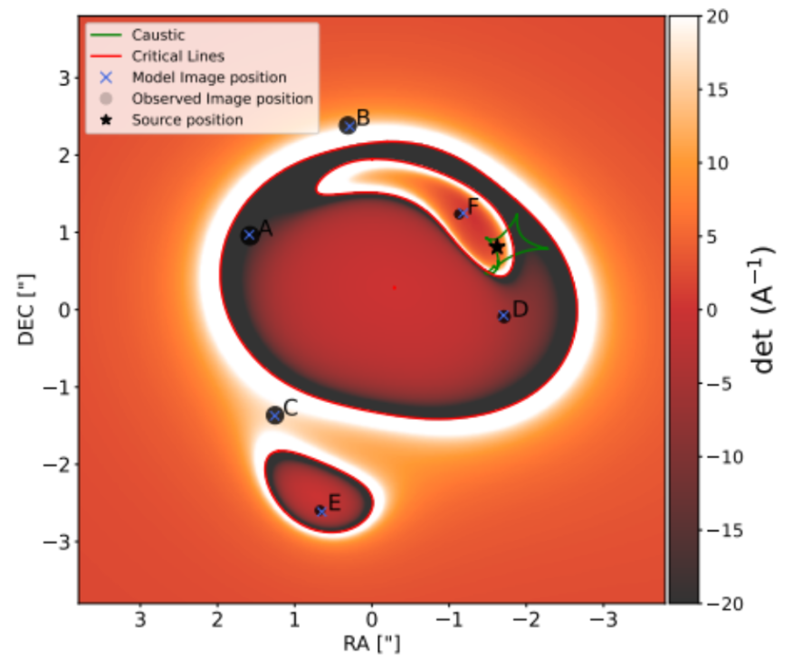

Gravitational Lens Modelling
Definitions
(D1) Einstein zig-zag lens - A gravitational lens system with two lenses, where two light rays from the source cross the optical path between the lenses [tec_et_al].

(D2) Gravitational lensing - An astrophysical phenomenon where a massive galaxy present in between the observer and the source bends light being emitted by the source, such that the observer sees distorted (weakly lensed) or multiple (strongly lensed) images of the same source.

(D3) AGN - Active Galactic Nuclei are galaxies with an actively accreting (consuming matter) supermassive black hole (SMBH) at their center. The matter forms a very bright (one of the brightest phenomena in the universe) accretion disc as it spirals into the SMBH. An AGN might also contain twin jets of gas and dust ejected from the center of the galaxy that can rival the galaxy’s own size. High redshift (D4) AGN are often referred to as quasars.

(D4) Redshift (denoted by z) - As light moves through expanding space, its waveform gets stretched out, increasing its wavelength and making it redder. Redshift is a measure of this stretching, and is used to determine how far astrophysical objects are from us by relating the stretch in wavelength to distance traveled through expanding space. Higher redshift => object is further away.
(D5) Flux - Amount of light captured by the camera. Higher flux results in a brighter image.
(D6) SIS/SIE/PEMD - All of these are separate models for the mass distribution in a galaxy. SIS is the simplest model for a spherical galaxy where mass falls off by a power of 2. SIE includes two additional parameters for ellipticity. PEMD adds two for ellipticity, and one additional parameter for the slope of the mass distribution power law.
(D7) Shear - Adds two parameters to add ellipticity to any model without having to align it with the elliptical shape of the galaxy observed in the optical data. This is usually used if the lens is a part of a cluster, or to describe galaxies using an SIS+shear model instead of an SIE. An SIE+shear model is usually used to model an elliptical galaxy in a cluster to model angular properties from the lens galaxy and uncorrelated angular properties from surrounding matter.
(D8) Recoil - Merging black holes release a massive amount of energy in the form of gravitational waves, and this can happen anisotropically, kicking the resulting black hole in a direction opposite to the released gravitational waves. This kick is stronger in systems with more asymmetry in the sizes of the merging black holes.
Figure 3 in [fd_et_al] - size of black circles represents amount of magnification:

Question
Here is a picture of a real astrophysical system. What is the best plausible theoretical model to describe this system?

References
-
F. D. et al.
Year and title blinded from debate judges.
-
T. E. C. et al.
Year and title blinded from debate judges.
Debate: Liz (Initiator) vs Bob (Questioner)
| Turn | Content |
|---|---|
| Liz.0 | The best plausible theoretical model to describe this system is an Einstein zig-zag lens with two deflectors and a single AGN (D1) [fd_et_al]. |
| Bob.Q.0 | An Einstein zig-zag lens requires many different parameters, what mass and light profiles did you use for the two deflectors and the quasar? |
| Liz.1 | A Power-law Elliptical Mass Distribution (D6) was used for the first deflector (z=1.84) and a Single Isothermal Sphere (SIS) with external shear (D7) for the second deflector (z=1.8845). Four SIS profiles for galaxies in the plane of the first deflector were also used, but they didn’t affect convergence due to their distance from the optical axis. The quasars were modelled as point sources. |
| Bob.Q.1 | The second deflector is an isolated galaxy that can be described by an SIE profile, but is instead constrained using an SIS + shear model. The presence of galaxies in the first deflector’s plane could have been handled using a shear to model the cumulative mass profile, why add four SIS profiles instead? |
| Liz.2 | An SIE profile is often degenerate with an SIS + shear profile at low radii, and has the same amount of parameters. Four SIS profiles were added to accurately model the effects of neighbouring galaxies, taking their positions into account to model a more complex mass distribution than a simple shear. |
| Bob.Q.2 | Adding complexity to the model allows for more degrees of freedom – 12 (SIE+shear for the lensing galaxy with two point sources at the same redshift) vs 15 (+15 if you set the position and redshift of the second deflector and the four foreground galaxies as free parameters) – that might overfit to the data. What is the reduced chi-squared error of your final model in the optical bands? |
| Liz.3 | Positions of the four foreground galaxies were constrained by optical data from HST; the position of the second deflector was partially constrained by modelling the red arc as the second deflector is being lensed by the first deflector. Redshifts of the foreground galaxies and the second deflector were constrained by photometry (HST) and spectroscopy (NIRSpec) respectively. Chi-squared error for the optical data was not calculated, but the RMSE of the positions of the six lensed images is 0.03”. |
| Bob.Q.3 | The RMSE for the positions of the six lensed images in our model is 0.02” and the reduced chi-squared error for the optical data is 2.11. The absence of a chi-squared error (reduced or otherwise) to assess absolute flux matching limits the ability to determine a better fit for the data. Even for flux ratio calibration, the lens model suggests a flipped ratio for the two least bright images than what is observed, how do you explain this? |
| Liz.4 | We don’t include final magnification estimates, but Figure 3 in F. D. et al.[fd_et_al] provides a visual representation for the magnification of all images, which suggests a better match for the observed flux ratio than your reported values. The remaining discrepancy could be due to intrinsic variability in the quasar or microlensing. |
| Bob.Q.4 | Microlensing would not affect observed flux in radio bands, and our data does highlight the anomaly in radio as well. In addition to intrinsic variability, the flux anomaly would also be explained by perturbations in the lens model, and the better fit for magnification in your model could be attributed to overfitting due to an increased number of parameters. |
Debate: Bob (Initiator) vs Liz (Questioner)
| Turn | Content |
|---|---|
| Bob.0 | The best plausible theoretical model to describe this system is a gravitationally lensed (D2) dual-AGN (D3) [csm_et_al]. |
| Liz.Q.0 | If the system is indeed a dual-AGN, why is there no trace of a host galaxy for the two sets of point sources? There should be an extended arc for the four large points, especially since they are magnified more by the lens. |
| Bob.1 | Any galaxy smaller than 400 pc across will not show up as an extended lensed arc in this image, suggesting a dwarf galaxy hosting the first active black hole. The red arc can be the host galaxy of the second active black hole, and the offset of the black hole from the center of the red galaxy can be explained by SMBH recoil (D8). |
| Liz.Q.1 | Invoking the recoil mechanism requires the system to be post-merger, what evidence do you have that the system is interacting/has interacted? |
| Bob.2 | The modelled separation between the quasars in the source plane is 6.5 kpc, which enables significant interaction. Additionally, radio data collected using VLA in addition to the optical HST data shows high radio emission corresponding to star formation rates that are too high for a pre-merger scenario. |
| Liz.Q.2 | High radio emission can be attributed to weak jets instead of star formation, which can point to pre-merger galaxy interactions. How do you justify a post-merger scenario without attributing radio emissions to high star formation rates? |
| Bob.3 | A significant part of the radio emission not coming from star formation is unlikely, since close-pair galactic interactions can increase star formation rates [cs_et_al]. Even if we assume that the majority of radio emission comes from the AGN (like weak jets), predictions from galactic simulations place dual-AGN activity in the latter phases of a merger [jms_et_al], which also point to a post-merger scenario. |
| Liz.Q.3 | Spectroscopy constrains the second deflector’s redshift to be ~1.8845 and the quasar’s redshift to be ~2.38, which rules out the possibility of the red lensed arc being the host galaxy for one of the AGN in your model. How do you justify a dual-AGN system without the red arc? |
| Bob.4 | A dual-AGN is still plausible w/o the red galaxy at the same redshift as the quasars. As with the first AGN, the extended structure of the second might not be visible or be obscured by the overlapping red galaxy. Constraints on galaxy size for the second AGN would be looser than that of the first due to the lower magnification. Separation between the two AGN would also be the same or lower if the red galaxy was added to the lens model, which makes them better candidates for a dual-AGN system. |
| Liz.Q.4 | The light curves obtained by spectroscopy for all lensed images are very similar, suggesting that they were emitted by a single astrophysical object, which adds evidence for a single AGN lensed by two deflectors instead of a dual-AGN system. |
References
-
F. D. et al.
Year and title blinded from debate judges.
-
C. S. M. et al.
Year and title blinded from debate judges.
-
T. E. C. et al.
Year and title blinded from debate judges.
-
M. O. et al.
Year and title blinded from debate judges.
-
C. L., T. A., et al.
Year and title blinded from debate judges.
-
C. L., M. M., et al.
Year and title blinded from debate judges.
-
C. S. et al.
Year and title blinded from debate judges.
-
J. M. S. et al.
Year and title blinded from debate judges.
Debate: Liz (Initiator) vs Bob (Questioner)
| Turn | Content |
|---|---|
| Liz.0 | The astrophysical system shown is the first discovered "Einstein zig-zag lens," J1721+8842. As defined in (D1) and modeled in Figure 3 from [fd_et_al], this is a compound gravitational lens where a single background quasar is lensed by two foreground galaxies at different redshifts. The unique six-image configuration arises because the light path "zig-zags," crossing the optical axis between the two deflectors. This geometric topology explains the sextuplet of images that a single-plane lens cannot. |
| Bob.Q.0 | Hold on. We are looking at a lensed dual quasar. Binary quasars are common, and if a pair lies behind a single lensing galaxy, we expect a complex image configuration (e.g., a quad plus a double). Standard lensing produces odd image numbers (D6). This "zig-zag" implies a one-in-a-million alignment. A binary quasar lensed by a standard SIE fits the six spots perfectly without inventing new physics. Why invent a rare "zig-zag" when a standard model suffices? |
| Liz.1 | Likelihood arguments fail against hard data. Spectroscopic analysis confirms all six images are of the identical source, sharing the same redshift and spectral features, effectively ruling out a binary quasar pair. Furthermore, the light curves are identical but time-shifted. Figure 3 explicitly plots the single source position (black star) within the complex caustic structure created by the two interfering lens potentials. A binary source would show spectral differences and uncorrelated flickering. |
| Bob.Q.1 | Spectra are deceptive; merging quasars share host properties and emission lines. As for Figure 3, complex caustics arise from standard SIS+Shear (D7) models with substructure. Your model requires a "divine" alignment. [jk_et_al] demonstrates how binary sources mimic lensed systems. A "naked cusp" configuration naturally explains the multiplicity without your exotic geometry. Why assume a rare "zig-zag" topology over a standard cluster perturbation? |
| Liz.2 | Substructure creates small flux anomalies, not the massive deflection forming six bright images. The "zig-zag" is confirmed by the detection of the second deflector galaxy itself. In Figure 3, the critical lines (red) and caustics (green) show the distinct topology of a dual-plane system where images A and D form from the crossing of the optical axis. Single-plane perturbations cannot reproduce this specific astrometry. |
| Bob.Q.2 | Two deflectors create chaos, yet you claim order. You assume light crosses the axis, but we only see final positions. This model is curve-fitting. A "naked cusp" configuration in a single complex potential yields high-multiplicity images (like 5) without this "zig-zag" novelty. How do you distinguish your model from a standard cusp catastrophe with slight shear? |
| Liz.3 | It is falsifiable and confirmed. Redshifts are fixed: source at \(z \approx 2.4\), lenses at \(z \approx 1.9\) and \(z \approx 0.2\). Figure 3 accurately predicts positions A-F using this mass distribution. A naked cusp yields 3 or 5 images, never 6. Only the compound potential of the Einstein zig-zag explains the observed astrometry and time delays simultaneously. |
Debate: Bob (Initiator) vs Liz (Questioner)
| Turn | Content |
|---|---|
| Bob.0 | This system is best described as a lensed dual quasar (or binary source). The six bright points are the result of two quasars—likely a merging pair—being lensed by the central elliptical galaxy. Standard lensing theory (odd-number theorem) dictates that a single non-singular lens produces an odd number of images, usually 3 or 5, with the central one invisible. Seeing 6 bright images implies an even number of sources (\(2 \times 3\)), not a single source. |
| Liz.Q.0 | Your counting argument ignores the fact that compound lenses (multi-plane) violate the single-plane odd-number theorem. If this were a dual quasar, why do the monitoring data show that all six images vary in brightness with the exact same pattern, merely shifted in time? A binary source would have two uncorrelated light curves. How does your dual-source model account for this perfect synchronization? |
| Bob.1 | Quasars in a merger are physically connected; variability is correlated by large-scale feeding events. "Identical" is merely "within measurement error". The "Einstein zig-zag" (D1) requires an alignment so precise—two galaxies and a quasar on a single line—it is a statistical absurdity. A dual source is orders of magnitude more likely. Why postulate a miracle when a binary source fits? |
| Liz.Q.1 | Bayesian priors must yield to the likelihood of the evidence. We see a second lensing galaxy in the data (the \(z \approx 1.9\) deflector). Figure 3 in [fd_et_al] shows the caustic network for this specific configuration. Note the "lips" and "diamond" caustics overlapping. If this were a dual source, we would see two separate sets of caustics. Why does the best-fit model in Figure 3 show only one source position (the star) producing all six images? |
| Bob.2 | Models fit whatever you tell them to. Figure 3 is a theoretical idealization, not data. The second galaxy is merely a weak perturber (Shear, D7). A single source producing 6 images requires the source to sit in a tiny, unstable region of the caustic. A dual source allows stable positioning (fold or cusp), which is physically robust. Why rely on instability? |
| Liz.Q.2 | The "unstable region" is exactly what we observe: a rare, high-magnification event. The "zig-zag" definition (D1) involves light rays crossing the axis between lenses. This creates a specific parity inversion for the image pairs that a dual source/single lens cannot mimic. Look at the det(A) color bar in Figure 3; it indicates the parity. Can your dual-source model reproduce the specific parity sequence and time-delay ordering observed in the six images? |
| Bob.3 | Parity is unmeasurable without resolved substructure. A dual source model with a standard SIE+Shear potential matches the positions perfectly. The "zig-zag" is an extraordinary claim relying on a complex, multi-plane inversion that suffers from mass-sheet degeneracy. A binary source—a known, common phenomenon—explains the six spots without inventing new optical paths. |
References
-
F. D. et al.
Year and title blinded from debate judges.
-
T. C. et al.
Year and title blinded from debate judges.
-
J. K. et al.
Year and title blinded from debate judges.
Debate: Liz (Initiator) vs Bob (Questioner)
| Turn | Content |
|---|---|
| Liz.0 | Best model: a two-plane compound strong lens (“Einstein zig‑zag”): one background AGN is deflected by two galaxies at different z, producing six quasar images plus arcs. Smooth one-plane galaxy lenses almost always yield 2 or 4 bright point images; high-multiplicity like this is the zig‑zag hallmark.[t_e_c_et_al][f_d_et_al] |
| Bob.Q.0 | Why does this require two planes? Isn’t a standard one-plane SIE/PEMD+shear expected to make a quad, with the extra “points” being unresolved host knots or PSF residuals? Which specific feature in this image rules out a single-plane lens model?[r_k_et_al][r_d_b_et_al] |
| Liz.1 | For a single smooth deflector, a point source gives 2/4 bright images (and at most a very faint 5th near the center). Here the six peaks are off-center and comparably bright, and several sit away from the extended arc, unlike host knots that ride the arc. That pattern matches compound-lens six-image solutions.[t_e_c_et_al][r_d_b_et_al] |
| Bob.Q.1 | You’re assuming the six peaks are the same quasar. Where is the decisive sign—matched colors, identical PSFs, or parity ordering—that excludes “dual AGN + lensing” or star-forming clumps? And doesn’t plausibility favor the common one-plane quad unless the image itself demands two deflectors?[r_k_et_al][r_d_b_et_al] |
| Liz.2 | A dual-AGN story needs two unrelated compact nuclei to land on the caustic so each becomes multiply imaged into a near-Einstein configuration—more contrived than one quasar plus two deflectors. Zig‑zag lenses produce a characteristic 6-point pattern plus multiple arc segments without inventing tuned source knots.[f_d_et_al][r_d_b_et_al] |
| Bob.Q.2 | Single-plane models can be complex without a second redshift plane: ellipticity+shear plus a satellite perturber or higher multipoles can split images. What observable in this image distinguishes a true two-plane zig‑zag from a one-plane lens with realistic substructure?[t_e_c_et_al][r_k_et_al] |
| Liz.3 | If you invoke satellites/multipoles to exceed the single-galaxy image-count limit, you’ve introduced extra lenses anyway—just forced into one plane. Two-plane lensing is the minimal, motivated way to get six comparably bright point images plus arcs, and it has a stable zig‑zag topology that one-plane “tuning” struggles to reproduce without fine‑tuned clumps.[f_d_et_al][t_e_c_et_al][r_d_b_et_al] |
Debate: Bob (Initiator) vs Liz (Questioner)
| Turn | Content |
|---|---|
| Bob.0 | Best plausible model: a single foreground galaxy lens described by SIE/PEMD with external shear, lensing one quasar and its host into a quad plus partial Einstein ring. Two-plane zig‑zag is exotic and typically reveals an additional deflector; this image is consistent with one dominant lens plus structured host light.[r_k_et_al][r_d_b_et_al] |
| Liz.Q.0 | A smooth one-plane lens of a point source gives 2 or 4 bright images (and at most a very faint 5th near the center). This image shows ~six bright, separated peaks. Which four are the quasar images in your model, and what mechanism creates the other two peaks without adding a second lens plane?[t_e_c_et_al][f_d_et_al] |
| Bob.1 | Finite resolution matters: two of the peaks sit on/near the red arc and are naturally explained as caustic-brightened knots in the lensed host that look compact under the PSF. The remaining four form the classic quad. That interpretation fits a standard one-plane mass model without multiplying deflectors.[r_k_et_al][r_d_b_et_al] |
| Liz.Q.1 | Your argument hinges on labeling two peaks as host knots. What image-level cue supports that—alignment along the arc, elongation, or color difference—and why do the six peaks appear similarly PSF-like? If you fit a quad, where do you place the lens center and what arc curvature does your model predict?[t_e_c_et_al][r_d_b_et_al] |
| Bob.2 | In one-plane lensing, arc curvature follows the main critical curve while brightness variations reflect source structure and microlensing, so compact bright spots are expected. A two-plane claim adds a second mass at another redshift and major degeneracies; absent an obvious second galaxy or spectroscopy, the best model remains SIE/PEMD+shear.[r_d_b_et_al][t_e_c_et_al] |
| Liz.Q.2 | Zig‑zag lenses predict six quasar images spaced around an Einstein scale; quads plus host knots predict four points and a smoother arc. In this image the six peaks are spread around the lens, not confined to the arc. What concrete positional pattern here matches a quad better than a six-image configuration?[f_d_et_al][r_d_b_et_al] |
| Bob.3 | A quad is defined by four images tied to the lens’s critical curve; additional compact peaks need not obey the quad geometry if they come from distinct regions of the extended host crossing the caustic. Given only morphology, one dominant deflector with shear explains both the ring segment and bright spots; two-plane zig‑zag is an unnecessary leap.[r_k_et_al][r_d_b_et_al][t_e_c_et_al] |
References
-
T. E. C., et al.
Year and title blinded from debate judges.
-
F. D., et al.
Year and title blinded from debate judges.
-
R. K., et al.
Year and title blinded from debate judges.
-
R. D. B., et al.
Year and title blinded from debate judges.
Debate: Liz (Initiator) vs Bob (Questioner)
| Turn | Content |
|---|---|
| Liz.0 | The best model for this system is an Einstein zig-zag lens—a compound gravitational lens with two deflectors at different redshifts. As shown by [tec_et_al], a zig-zag lens requires two aligned lensing galaxies. The six-image configuration is diagnostic: standard single lenses produce only 2 or 4 images. Per [cb_2016], six images require "the second lens [to be] multiply imaged by the first." The asymmetric magnifications in Figure 3 from [fd_et_al] confirm this compound structure. |
| Bob.Q.0 | Six images do not require two lenses. A single elliptical galaxy (SIE model) with strong external shear from a nearby cluster produces high-multiplicity configurations. Per [courbin], shear from clusters significantly perturbs lensing potentials, often increasing image multiplicity. Why invoke an extraordinarily rare two-lens alignment when a simpler SIE+shear model—widely used in lens modeling—explains the observations? |
| Liz.1 | External shear cannot produce six images from a single lens. [cb_2016] states compound lenses create "image configurations qualitatively different to those generated by single-plane lenses." An SIE+shear on one plane produces at most 4 images—shear stretches the caustic but doesn't create additional critical curves. The separate critical curve around image E in Figure 3 proves a second lens plane exists. Where is your second critical curve with single-plane shear? |
| Bob.Q.1 | The separate feature near E is a subhalo perturbation within the main lens, not a second lens plane. As [ms_1998] established, substructures in lenses create localized perturbations causing flux anomalies. Your "zig-zag" model requires extraordinarily precise alignment—[tec_et_al] calls it "extremely rare." A perturbation in a single lens is far more probable than a 1-in-50,000 cosmic coincidence. How do you justify the rarer model? |
| Liz.2 | Subhalo perturbations create small deflections insufficient to generate bright images like E and F. Figure 3 shows E is comparably bright—requiring significant lensing mass, not a minor perturbation. The red arc is the second lensing galaxy at a different redshift from the quasar. Your SIE+shear model cannot explain an arc at a distinct redshift. That spectroscopic evidence clinches the two-plane interpretation. |
| Bob.Q.2 | The arc at a "different redshift" is the quasar host galaxy being lensed alongside the point source. Many single-lens systems show both lensed quasars and their host galaxy arcs at the same source redshift. [gfs_1988] demonstrates that lens modeling suffers from mass-sheet degeneracy—the same observables can be produced by different mass distributions. Have you ruled out that degeneracy in claiming a second lens? |
| Liz.3 | The arc's different redshift is proven by spectroscopy—not photometry. As [fd_et_al] demonstrates, the "more distant deflector" is visible as an arc at z≈1.9, while the quasar is at z≈2.8. These are spectrally distinct objects at different distances. A single-lens SIE+shear model fundamentally cannot explain two lensed sources at different redshifts producing the observed configuration. The zig-zag model predicted by [cb_2016] and confirmed observationally is the only physically consistent explanation. |
Debate: Bob (Initiator) vs Liz (Questioner)
| Turn | Content |
|---|---|
| Bob.0 | This system is best modeled as a single elliptical lens with external shear (SIE+shear). The image shows a central galaxy with multiple quasar images around it—a classic single-lens configuration. As noted by [courbin], external shear from neighboring matter "significantly perturbs lensing potentials." The visible arc is the quasar's host galaxy, stretched by the lens. An SIE+shear model is standard, well-tested, and requires fewer free parameters than exotic compound models. |
| Liz.Q.0 | An SIE+shear model on a single plane produces at most 4 images—this is a mathematical constraint from the lens equation. How do you explain six distinct images? [cb_2016] proves that "up to six images of a background source can form, but only if the second lens is multiply imaged by the first." What mechanism in your single-plane model creates the additional two images? |
| Bob.1 | The additional images arise from strong asymmetric perturbations. When external shear is extreme and the lens has significant substructure, additional image pairs form near critical curves. Per [ms_1998], substructures "perturb the gravitational potential" causing flux anomalies and image perturbations. Models with subhalos embedded in the main lens—common in massive ellipticals—create localized critical curves generating extra images without requiring a second lens plane. |
| Liz.Q.1 | Subhalos create small local perturbations, not the large-scale separate critical curve visible in Figure 3 around images E and F. Moreover, spectroscopic data confirm the red arc is at a different redshift than the quasar—it's a second galaxy acting as a lens, not the quasar's host. How does your SIE+shear model account for two distinct lensed sources at different redshifts producing this configuration? |
| Bob.2 | The "different redshift" claim assumes specific spectral identification that can be ambiguous—emission lines at high redshift often overlap with different features. Even so, the presence of an intervening galaxy along the line of sight does not necessitate it acts as a significant lens. Many lens systems have foreground objects contributing only minor perturbations, well-captured by shear terms. The dominant lensing remains single-plane. |
| Liz.Q.2 | The second galaxy has a measured Einstein radius θ_E ≈ 0.36″—far too large for a "minor perturbation." Per [fd_et_al], this corresponds to ~2×10¹¹ solar masses, comparable to the primary lens. How can you dismiss such a massive object as mere shear? [cb_2016] requires that "the Einstein radius of the second lens is comparable to, but does not exceed that of the first" for six images—exactly what we observe. |
| Bob.3 | The Einstein radius measurement depends on assuming a two-plane model from the start—circular reasoning. Per [gfs_1988], lens modeling suffers from fundamental degeneracies where mass attributed to a "second lens" can be redistributed to the primary lens plus environment. The simpler explanation—one primary lens with environmental perturbation—remains more parsimonious and consistent with how similar multi-image quasars have been modeled historically. |
References
-
T. E. C., et al.
Year and title blinded from debate judges.
-
F. D., et al.
Year and title blinded from debate judges.
-
T. E. C. and D. J. B.
Year and title blinded from debate judges.
-
F. C.
Year and title blinded from debate judges.
-
S. M. and P. S.
Year and title blinded from debate judges.
-
M. V. G., et al.
Year and title blinded from debate judges.